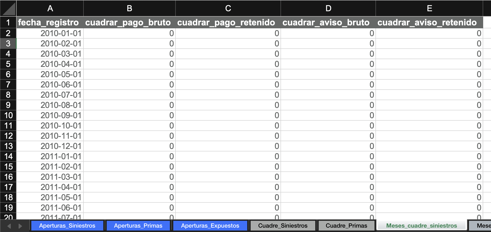

El archivo segmentación
Este es un archivo de Excel con tres objetivos:
- Definir las aperturas de siniestros, primas, y expuestos para el análisis.
- Parametrizar el cuadre contable contra SAP (opcional).
- Almacenar tablas de aperturas para cargar en queries de Teradata (opcional).
Ejemplos
Consulte ejemplos reales de archivos de segmentación utilizados para los cierres contables.
Definir aperturas
¿Qué es una apertura?
Una apertura es un nivel de desagregación del producto a analizar.
Ejemplo
En un seguro de salud, podría analizarse cada cobertura por separado (laboratorios, diagnósticos, cirugías) o agruparlas en categorías con comportamientos similares. En ese caso, decimos que estamos "aperturando" por cobertura.
Tablas de aperturas
En el archivo de segmentación, cree las siguientes hojas con sus respectivas tablas de aperturas:
- Apertura_Siniestros
- Apertura_Primas
- Apertura_Expuestos
Advertencia
Cada tabla debe incluir obligatoriamente las columnas:
- codigo_op (código de la compañía)
- codigo_ramo_op (código del ramo)
Estas columnas son necesarias para realizar las comparaciones contra SAP.
Propiedades de cada apertura
En Apertura_Siniestros, para cada apertura se debe definir:
-
Periodicidad de ocurrencia: Granularidad del triángulo y del entremés. Valores disponibles: Mensual, Trimestral, Semestral, o Anual.
-
Tipo de indexación de la severidad: Metodología de indexación que se utilizará para calcular la severidad. Puede tomar tres valores: Ninguna, Por fecha de ocurrencia, o Por fecha de movimiento
-
Medida de indexación de la severidad: Nombre del indicador a usar para la indexación (si aplica).
Ejemplo

Parametrizar el cuadre contable
Tip
Si no realizará cuadre contable, puede omitir esta sección.
Aperturas para repartir diferencias
Cree dos hojas:
- Cuadre_Siniestros
- Cuadre_Primas
En cada una incluya una tabla con las aperturas donde se repartirán las diferencias detectadas.
Nota
Para entender la lógica de repartición, consulte la guía de cuadre contable.
Ejemplo

Meses y cantidades a cuadrar
Agregue dos hojas:
- Meses_cuadre_siniestros
- Meses_cuadre_primas
Cada una debe tener una tabla con los todos los meses de movimiento esperados, y columnas para especificar si cada cantidad se va a cuadrar o no. En estas columnas indique con:
- 1 → se ajusta a la cifra contable.
- 0 → no se ajusta.
Ejemplo

Tablas para cargar en queries
Tip
Si no va a extraer información de Teradata, omita esta sección.
Las tablas y el formato requerido se describen en la guía de construcción de queries.